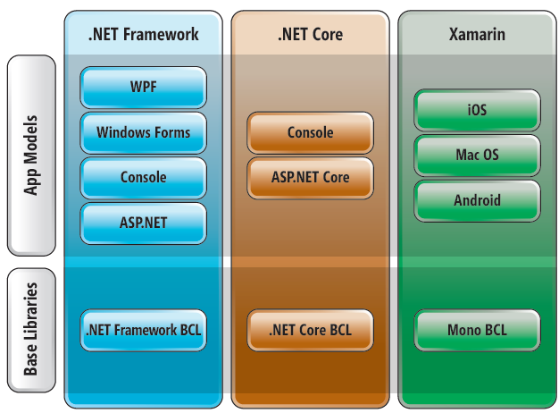

La Common Language Specification (CLS), que en español significa "Especificación de Lenguaje Común", es un conjunto de reglas y estándares definidos por Microsoft como parte de la plataforma .NET. Su propósito principal es garantizar la interoperabilidad entre diferentes lenguajes de programación que se ejecutan en el entorno .NET.
Principales puntos sobre la CLS:
Reglas de Interoperabilidad: La CLS establece reglas y requisitos que los lenguajes de programación deben cumplir para ser considerados "compatibles con CLS". Esto incluye normas para la declaración de tipos, manejo de excepciones, manejo de tipos de datos y otras consideraciones.
Promueve la Interoperabilidad: Al adherirse a las reglas de la CLS, los lenguajes de programación pueden interactuar de manera fluida y eficiente dentro del entorno .NET. Esto significa que las bibliotecas y componentes escritos en un lenguaje compatible con CLS pueden ser utilizados por otros lenguajes compatibles con CLS sin problemas de compatibilidad.
Facilita la Reutilización de Código: La CLS fomenta la reutilización de código al permitir que los desarrolladores escriban bibliotecas y componentes en diferentes lenguajes de programación que funcionen juntos sin problemas en una aplicación .NET.
En resumen, la Common Language Specification (CLS) es una especificación que establece reglas y estándares para garantizar la interoperabilidad y la compatibilidad entre diferentes lenguajes de programación en la plataforma .NET. Esto promueve la escritura de código reutilizable y facilita la colaboración entre desarrolladores que utilizan diferentes lenguajes en proyectos .NET.
ASP.NET Web Forms Web Services es una combinación de tecnologías que se utilizan en el desarrollo de aplicaciones web en la plataforma Microsoft ASP.NET. Aquí un resumen de cada uno de los componentes:
ASP.NET: ASP.NET es un marco de desarrollo web de Microsoft que permite la creación de aplicaciones web dinámicas y escalables. Proporciona una serie de herramientas y bibliotecas para simplificar el desarrollo de aplicaciones web y está diseñado para trabajar con el lenguaje de programación C# o VB.NET.
Web Forms: ASP.NET Web Forms es un modelo de programación dentro de ASP.NET que se basa en eventos y controles de servidor. Permite a los desarrolladores crear interfaces de usuario web de manera similar a la creación de aplicaciones de escritorio, utilizando controles como botones, cuadros de texto y cuadros desplegables. Web Forms facilita la creación de aplicaciones web interactivas y está diseñado para simplificar el desarrollo.
Web Services: Los Web Services son componentes de software que permiten a las aplicaciones intercambiar datos y funcionalidades a través de la web utilizando protocolos estándar como HTTP y XML. En el contexto de ASP.NET, los Web Services se crean utilizando tecnologías como ASP.NET Web API o WCF (Windows Communication Foundation). Estos servicios web pueden proporcionar acceso a datos, lógica empresarial y funcionalidades a través de la web, lo que permite la integración de aplicaciones y la comunicación entre sistemas.
En resumen, ASP.NET Web Forms Web Services representa una combinación de tecnologías que se utilizan en el desarrollo de aplicaciones web en la plataforma ASP.NET. ASP.NET proporciona un marco de desarrollo web, Web Forms simplifica la creación de interfaces de usuario web, y los Web Services permiten la comunicación y la interoperabilidad entre aplicaciones a través de la web. Juntas, estas tecnologías ofrecen una plataforma poderosa para crear aplicaciones web dinámicas y conectadas.
 Windows Forms, también conocido como WinForms, es una tecnología de desarrollo de aplicaciones de escritorio proporcionada por Microsoft como parte del entorno de desarrollo .NET.
Windows Forms, también conocido como WinForms, es una tecnología de desarrollo de aplicaciones de escritorio proporcionada por Microsoft como parte del entorno de desarrollo .NET.
Aquí un resumen de lo que es Windows Forms:
Framework de desarrollo de aplicaciones de escritorio: Windows Forms es un marco de desarrollo que permite a los programadores crear aplicaciones de escritorio para el sistema operativo Windows. Estas aplicaciones suelen tener una interfaz gráfica de usuario (GUI) que incluye ventanas, botones, cuadros de texto y otros controles interactivos.
Lenguaje de programación: Windows Forms se utiliza comúnmente con lenguajes de programación como C# o Visual Basic .NET (VB.NET). Los desarrolladores utilizan estos lenguajes para escribir el código de la aplicación y para definir la lógica detrás de la interfaz de usuario.
Diseño visual: Una característica destacada de Windows Forms es su diseñador visual, que permite a los desarrolladores diseñar la interfaz de usuario de sus aplicaciones arrastrando y soltando controles en un formulario. Esto facilita la creación de interfaces de usuario intuitivas.
Eventos y manejo de eventos: Windows Forms se basa en el modelo de programación de eventos, lo que significa que las acciones del usuario, como hacer clic en un botón, generan eventos que pueden ser manejados por el código del programa. Esto permite que las aplicaciones respondan a las interacciones del usuario.
Amplia gama de controles: Windows Forms ofrece una amplia variedad de controles predefinidos que pueden ser utilizados en las aplicaciones, como botones, cuadros de texto, listas desplegables, cuadros de diálogo y más. También se pueden crear controles personalizados según las necesidades del proyecto.
Acceso a API de Windows: Windows Forms proporciona acceso directo a la API de Windows, lo que significa que los desarrolladores pueden interactuar con las funciones del sistema operativo y aprovechar las características específicas de Windows en sus aplicaciones.
En resumen, Windows Forms es un framework de desarrollo de aplicaciones de escritorio que facilita la creación de aplicaciones con interfaces gráficas de usuario para el sistema operativo Windows. Ofrece herramientas visuales, un modelo de programación de eventos y una amplia gama de controles para simplificar el desarrollo de aplicaciones de escritorio personalizadas y funcionales.
ADO.NET (ActiveX Data Objects para .NET) y XML (Extensible Markup Language) son dos tecnologías clave utilizadas en el desarrollo de aplicaciones para manejar y almacenar datos de manera eficiente y flexible.
Aquí un resumen de ambas tecnologías y cómo están relacionadas:
ADO.NET (ActiveX Data Objects para .NET):
- ADO.NET es una parte integral de la plataforma .NET de Microsoft y proporciona un conjunto de bibliotecas y clases para acceder y manipular datos desde diversas fuentes de datos, como bases de datos relacionales, servicios web y más.
- Facilita la conexión a bases de datos mediante proveedores de datos específicos (como SQL Server, Oracle, MySQL, etc.) y permite realizar operaciones como consultas, inserciones, actualizaciones y eliminaciones de datos.
- ADO.NET se basa en el uso de objetos DataSet y DataReader para representar y manipular datos en memoria. Los DataSet son colecciones de tablas y relaciones que pueden ser llenadas con datos desde una fuente de datos y luego manipuladas en la aplicación. DataReader es una interfaz para leer datos de manera eficiente, especialmente en operaciones de lectura grandes y unidireccionales.
XML (Extensible Markup Language):
- XML es un formato de marcado que se utiliza para representar y estructurar datos de manera jerárquica y legible por máquinas y humanos. Utiliza etiquetas personalizadas para definir elementos y atributos que describen la información.
- XML es independiente de la plataforma y el lenguaje, lo que lo hace adecuado para la comunicación entre sistemas heterogéneos y el intercambio de datos.
- Se utiliza ampliamente en la comunicación de datos en aplicaciones web, configuración de aplicaciones, intercambio de datos entre sistemas y almacenamiento de información estructurada.
Relación entre ADO.NET y XML: ADO.NET y XML a menudo trabajan juntos en aplicaciones para lograr objetivos comunes:
- Serialización y deserialización:ADO.NET permite convertir datos de tablas y conjuntos de datos en formatos XML (serialización) y viceversa (deserialización). Esto facilita el intercambio de datos entre aplicaciones y sistemas que utilizan XML como formato de intercambio.
- Almacenamiento de datos:XML se utiliza a veces como un formato de almacenamiento de datos alternativo o complementario en lugar de bases de datos relacionales. ADO.NET puede ayudar a leer y escribir datos en formato XML para interactuar con estas fuentes de datos.
En resumen, ADO.NET es una tecnología para acceder y manipular datos en aplicaciones .NET, mientras que XML es un formato de marcado versátil para representar datos. Ambas tecnologías pueden trabajar juntas para permitir la manipulación, el intercambio y el almacenamiento de datos de manera eficiente y flexible en aplicaciones y sistemas.
 La Base Class Library (BCL), que en español significa "Biblioteca de Clases Base", es una parte fundamental del entorno de desarrollo .NET de Microsoft.
Aquí un resumen de lo que es la Base Class Library:
Conjunto de Clases y Funcionalidades Estándar: La BCL es una colección de clases y funcionalidades que proporciona un conjunto estándar de herramientas y componentes para el desarrollo de aplicaciones en la plataforma .NET. Estas clases son reutilizables y abarcan una amplia gama de tareas comunes de programación, como manipulación de archivos, acceso a bases de datos, manejo de excepciones, manejo de colecciones, procesamiento de texto y mucho más.
Parte Integral de .NET Framework: La BCL forma parte del .NET Framework y está disponible para todos los lenguajes de programación compatibles con .NET, como C#, VB.NET y F#. Esto significa que los desarrolladores pueden utilizar las clases y funcionalidades de la BCL en sus aplicaciones sin necesidad de escribir código desde cero.
Promueve la Reutilización de Código: La BCL fomenta la reutilización de código al proporcionar una amplia variedad de clases y componentes que se han probado y optimizado para su uso en aplicaciones .NET. Los desarrolladores pueden aprovechar estas clases para acelerar el desarrollo de aplicaciones y mejorar la consistencia y la calidad del código.
Amplia Gama de Funcionalidades: La BCL cubre numerosas áreas de desarrollo de software, como entrada/salida de archivos, manipulación de datos, seguridad, servicios web, comunicación de red, gráficos, GUI (Interfaz Gráfica de Usuario) y más. Esto la convierte en una herramienta versátil para una variedad de aplicaciones, desde aplicaciones de escritorio hasta aplicaciones web y servicios en la nube.
En resumen, la Base Class Library (BCL) es una biblioteca estándar y esencial en la plataforma .NET que proporciona una amplia colección de clases y funcionalidades reutilizables para simplificar y acelerar el desarrollo de aplicaciones. Permite a los desarrolladores aprovechar componentes confiables y probados en sus proyectos, lo que mejora la eficiencia y la calidad del código.
 El Common Language Runtime (CLR), que en español significa "Tiempo de Ejecución de Lenguaje Común", es una parte fundamental de la plataforma .NET desarrollada por Microsoft.
El Common Language Runtime (CLR), que en español significa "Tiempo de Ejecución de Lenguaje Común", es una parte fundamental de la plataforma .NET desarrollada por Microsoft.
Aquí un resumen de lo que es el Common Language Runtime:
- Entorno de Ejecución: El CLR es una parte esencial del entorno de ejecución de la plataforma .NET. Actúa como una máquina virtual que ejecuta código gestionado escrito en lenguajes como C#, VB.NET, F# y otros lenguajes compatibles con .NET.
- Gestión de Memoria y Recursos: El CLR se encarga de la gestión automática de la memoria, lo que significa que asigna y libera memoria de forma automática para los objetos creados en el programa. También se encarga de la gestión de recursos, como la administración de conexiones a bases de datos y la recolección de basura para liberar recursos no utilizados.
- Compilación Justo a Tiempo (JIT): El CLR utiliza un compilador Justo a Tiempo (JIT) que traduce el código fuente o intermedio de alto nivel de los programas en código de máquina nativo para el sistema en el que se ejecuta, lo que permite que las aplicaciones .NET sean altamente portables y eficientes.
- Seguridad y Control de Acceso: El CLR implementa un modelo de seguridad robusto que controla el acceso a recursos del sistema y protege las aplicaciones de posibles amenazas, como ejecución de código malicioso.
- Interoperabilidad: El CLR permite la interoperabilidad entre diferentes lenguajes de programación .NET, lo que significa que los componentes escritos en diferentes lenguajes pueden trabajar juntos de manera transparente en una misma aplicación.
- Manejo de Excepciones: El CLR proporciona un sistema de manejo de excepciones que permite a los desarrolladores gestionar errores y excepciones de manera controlada, mejorando la robustez de las aplicaciones.
- Recolección de Basura: El CLR se encarga de la recolección de basura, lo que significa que automáticamente libera la memoria de objetos que ya no se utilizan, evitando fugas de memoria.
En resumen, el Common Language Runtime (CLR) es una parte esencial de la plataforma .NET que proporciona un entorno de ejecución para programas escritos en lenguajes compatibles con .NET. Ofrece características clave como gestión de memoria, seguridad, interoperabilidad y manejo de excepciones para facilitar el desarrollo de aplicaciones seguras y eficientes en múltiples lenguajes de programación.
Visual Studio es un entorno de desarrollo integrado (IDE, por sus siglas en inglés) desarrollado por Microsoft.
Aquí un resumen de lo que es Visual Studio:
- Herramienta de Desarrollo Integral: Visual Studio es una herramienta de desarrollo completa y versátil utilizada por programadores y desarrolladores para crear una amplia variedad de aplicaciones de software, incluyendo aplicaciones de escritorio, aplicaciones web, aplicaciones móviles, juegos, servicios en la nube y más.
- Soporte para Múltiples Lenguajes: Visual Studio admite varios lenguajes de programación populares, como C#, Visual Basic .NET, C++, F#, Python y otros. Esto permite a los desarrolladores trabajar en sus lenguajes preferidos dentro del mismo entorno.
- Características de Productividad: Visual Studio ofrece una amplia gama de características y herramientas para aumentar la productividad del desarrollador, como resaltado de sintaxis, autocompletado de código, depuración, refactorización, administración de proyectos, control de versiones y más.
- Diseñador Visual: Incluye diseñadores visuales que facilitan la creación de interfaces de usuario para aplicaciones, como Windows Forms, ASP.NET, WPF (Windows Presentation Foundation) y Xamarin.
- Integración con .NET y Azure: Visual Studio se integra estrechamente con la plataforma .NET y Microsoft Azure, lo que facilita el desarrollo y la implementación de aplicaciones en la nube y servicios web.
- Amplia Comunidad y Ecosistema: Visual Studio cuenta con una comunidad activa de desarrolladores y una amplia gama de extensiones y complementos disponibles a través de Visual Studio Marketplace, lo que permite personalizar y extender aún más la funcionalidad del IDE.
- Versiones y Ediciones Diversas: Visual Studio está disponible en diferentes ediciones, incluyendo Visual Studio Community (gratuita para proyectos de código abierto y pequeñas empresas), Visual Studio Professional y Visual Studio Enterprise (con características avanzadas para proyectos empresariales).
En resumen, Visual Studio es una poderosa y versátil herramienta de desarrollo que ofrece un entorno completo para la creación de aplicaciones de software en una variedad de plataformas y lenguajes. Su conjunto de características, herramientas de productividad y capacidad de extensión lo convierten en una elección popular entre los desarrolladores de todo el mundo.